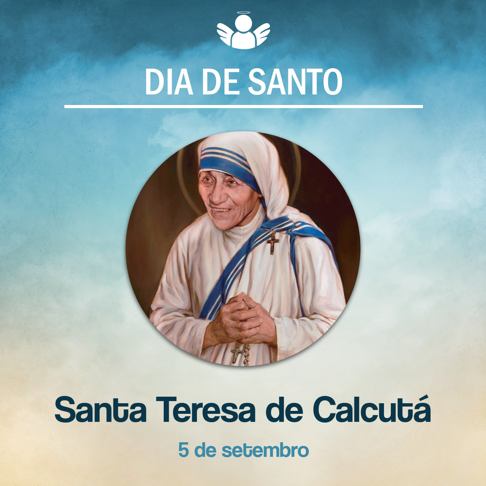

São Gregório Magno
05 de setembro de, 2020
Agnes Gonxha Bojaxhiu, conhecida como Madre Teresa de Calcutá, nasceu no dia 26 de agosto de 1910, em Skopje, naquela época pertencente à Albânia, hoje parte da Macedônia. Com o consentimento dos pais, aos 18 anos, ingressou na Congregação de Nossa Senhora de Loreto, em Dublin, Irlanda. Agnes cultivava o sonho de ir como missionária à Índia, para ajudar os pobres.
Depois de um período de formação, no dia 24 de maio de 1931, professou os votos, recebendo o nome de Teresa. Logo foi enviada para a Índia, concretamente para Darjeeling, onde as irmãs de Loreto tinham um colégio. Finalmente seu sonho começava a tornar-se uma realidade. De Darjeeling passou a Calcutá, onde ministrou aulas de História e Geografia. Mais tarde, foi eleita diretora do Colégio Santa Maria. Porém, no seu coração, continuava o desejo de servir os mais pobres.
Num dia de setembro de 1946, durante uma viagem de trem, deparou-se com um pobre de rua que lhe disse: “Tenho sede!”. Esse fato a marcou e deu a certeza de que seu chamado era o de dedicar-se aos mais necessitados. Então decidiu deixar o conforto do Colégio e foi apresentar seu plano ao Papa Pio XII, esperando dele sua autorização. Ela foi autorizada a deixar a Congregação, mas seguiu como religiosa, sob a obediência do arcebispo de Calcutá. Posteriormente, fez um curso breve de Enfermagem e, obtendo a nacionalidade indiana, começou a dar aulas a crianças carentes.
Tendo deixado o hábito da Congregação de Loreto, Teresa usava um sári branco (roupa indiana) debruado de azul e, no ombro, uma pequena cruz. Incansável e com sorriso alegre, Teresa percorria os bairros pobres, levando donativos e sempre pronta a socorrer qualquer um que precisasse.
Suas antigas alunas do colégio onde lecionara por 17 anos começam a interessar-se pelas obras da caridade que Teresa realizava. Aos poucos, algumas dessas mulheres foram somando-se àquela obra. Esse seria o começo da Congregação das “Missionárias da Caridade” de Madre Teresa, a qual foi aprovada pela Santa Sé em 7 de outubro de 1950.
A Congregação rapidamente se expandiu pela Índia e pelo mundo inteiro. O amor aos pobres, expresso em obras de caridade - lar infantil Sishi Bavan (Casa da Esperança), o “Lar para Moribundos”, em Kalighat, entre outros - distinguiu Madre Teresa. Isso lhe valeu o reconhecimento do governo indiano, o qual, em 1993, concedeu-lhe a medalha “Senhor do Lótus”. Em outubro de 1979, Madre Teresa de Calcutá recebeu o Prêmio Nobel da Paz. O Papa João Paulo II a recebeu em audiência privada e a nomeou “embaixadora” do Papa em todas as nações. Muitas universidades lhe conferiram o título honoris causa. Em 1980, recebeu a ordem Distinguished Public Service Award, nos Estados Unidos. Muitos outros reconhecimentos e medalhas a honraram por seu incansável trabalho em favor dos que mais sofriam, vítimas da pobreza e da doença.
Entretanto a saúde de Madre Teresa também começa a ver-se afetada. Depois de sobreviver a dois ataques do coração, no dia 5 de setembro de 1997, faleceu de um ataque cardíaco.
Em 19 de outubro de 2003, Madre Teresa de Calcutá foi beatificada pelo Papa João Paulo II. No dia 4 de setembro de 2016, foi canonizada pelo Papa Francisco. Sendo de baixa estatura e já muito encurvada, Madre Teresa de Calcutá seguia movimentando o mundo pelo amor a Deus e aos pobres. Que seu exemplo continue movimentando-nos a amar e a servir. Amém!